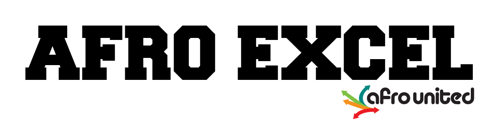
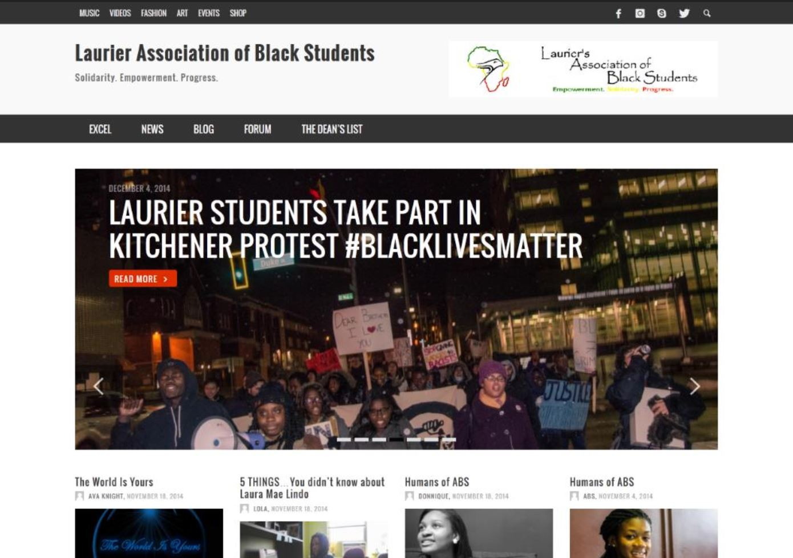

<ion-content>
  <ion-grid>
    <ion-row>
      <ion-col size="12" size-md="6" size-sx="1">
                
        <h5>
          Afro Excel was an online college and university blogging platform that connected Caribbean 
          and African student groups across Canadian post-secondary schools. A free online environment 
          for students, managed by students to redistribute useful information blogs and videos. It 
          kept students informed and up to date on tending topics and important subjects. 
        </h5>
        <p><b>Started:</b> February 2014</p>
        <p><b>Work:</b> Owner, UI/UX Designer, Web Master, Administrator,</p>
        <p><b>Status:</b> Ended April 2015 </p>
        <p><b>Features:</b> WordPress Multi-Site, Editorial</p>
        <p><b>Background:</b> 
          Afro Excel was the student arm of a larger project I had aspired to launch. The network 
          debuted with one student group and grew to five groups by the end of the 2014-2015 school year. 
          The concept was generally well received by students and student executives showed engagement, 
          however the network lacked a funding source to cover the operation cost. 
        </p>
        <p><b>Tools:</b> WordPress, WPMU-Dev, WooCommerce, PHP, Bluehost </p>
          
        
        
      </ion-col>

      <ion-col>
    
        <ion-row class="ae-img">         
          
        </ion-row>

      </ion-col>

    </ion-row>
  </ion-grid>
</ion-content>
